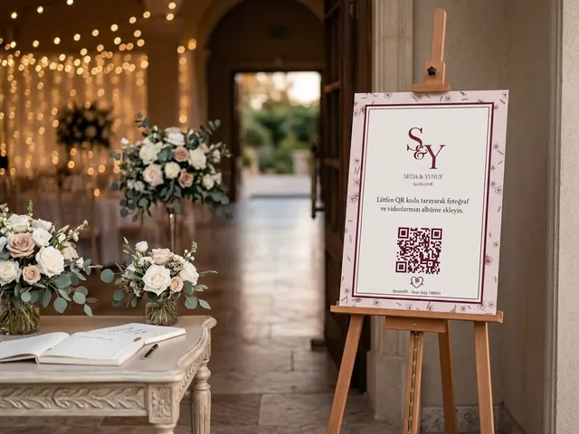
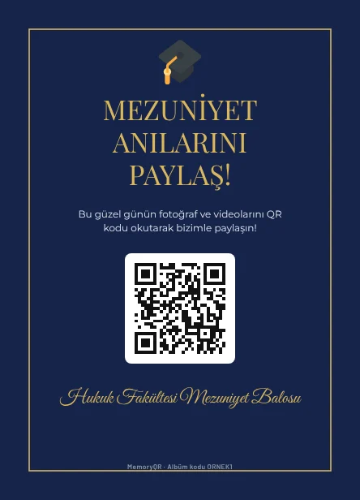
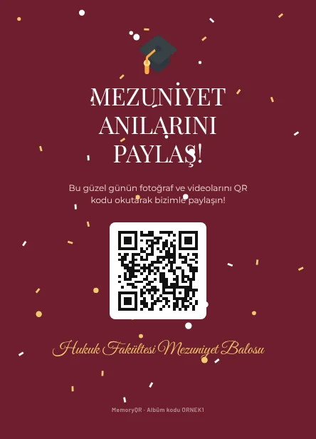
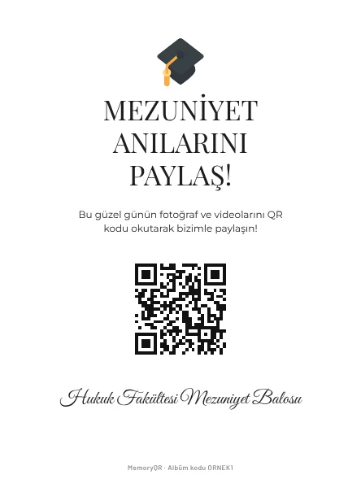
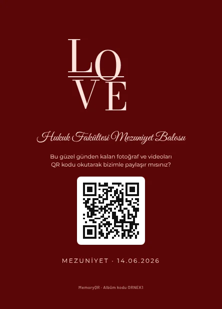

Mezuniyet balosu için QR kodlu ortak albüm
Balo gecesi herkes çeker, kimse paylaşmaz. MemoryQR ile masalardaki QR kodu okutan her mezun, çektiği fotoğraf ve videoları sınıfın ortak albümüne yükler.

Nasıl çalışır?
- QR kartı yerleştirinMasa kartı masalara, kartvizit tabaklara, giriş panosu kapıya. Hepsinde aynı QR.
- Misafirler okutur ve yüklerTelefon kamerasıyla okuturlar, adlarını yazarlar, fotoğraf ve videolarını seçip yüklerler. Uygulama gerekmez.
- Siz hepsini indirirsinizBütün fotoğraf ve videolar tek albümde. Tam ekran izleyin, favorilere ekleyin, tek tıkla indirin.
Bütün sınıf, tek albüm
Mezuniyet balolarında yüzlerce kişi aynı geceyi farklı açılardan çeker. Sınıf grubuna atılan birkaç fotoğraf dışında çoğu kaybolur. Tek QR ile herkesin çektiği her şey ertesi sabah tek albümde olur.
Sınıf temsilcileri ve organizatörler için
Albümü siz açarsınız, QR kartlar masalara konur. Balo bittikten sonra bütün fotoğrafları tek tıkla indirip sınıfla paylaşabilirsiniz. Okul ya da bölüm adıyla hazırlanan kart tasarımları baloya resmî bir hava katar.
Kep atma, kürsü ve dans
Tören ve balo aynı gün ise tek albüm yeterlidir; farklı günlerdeyse iki albüm açabilirsiniz.
Mezuniyet için QR kart tasarımları




Paketler ve fiyatlar
Dijital
499 TL
- 1 etkinlik, sınırsız fotoğraf ve video
- 30 gün saklama
- QR kart PDF'i (kendiniz basın)
- Tek tıkla hepsini indirme
Standart
899 TL
- 1 etkinlik, sınırsız fotoğraf ve video
- 30 gün saklama
- Tek tıkla hepsini indirme
- 10 masa kartı (A6) ya da 100 kartvizit, basılı olarak (siz seçersiniz)
Standart + Şövale
1.499 TL
- 1 etkinlik, sınırsız fotoğraf ve video
- 30 gün saklama
- Tek tıkla hepsini indirme
- 10 masa kartı (A6) ya da 100 kartvizit, basılı olarak (siz seçersiniz)
- Giriş panosu ve ahşap şövale
Aile paketi
1.999 TL
- Kına + düğün, 2 ayrı albüm
- 10 masa kartı (A6) ya da 100 kartvizit, basılı olarak (siz seçersiniz)
- 1 giriş panosu (50 × 70 cm) ve ahşap şövale
- 60 gün saklama
Ek: 1 yıl saklama +299 TL (albüm Google Drive'da bir yıl arşivlenir). Tek seferlik ödeme, abonelik yok.
Sık sorulan sorular
Mezuniyet için kaç kart gerekir?
Her masaya bir masa kartı ve girişe bir pano genellikle yeterlidir.
Fotoğrafları herkes görebilir mi?
Varsayılan olarak herkes kendi yüklediğini görür; albüm sahibi isterse paneli herkese açabilir ya da fotoğrafları indirip paylaşabilir.
Kaç fotoğraf yüklenebilir?
Etkinlik başına 5.000 dosyaya kadar; videolar dahil.
Anılarınız telefonlarda kalmasın
Tasarımınızı seçin, siparişi WhatsApp'tan başlatın.